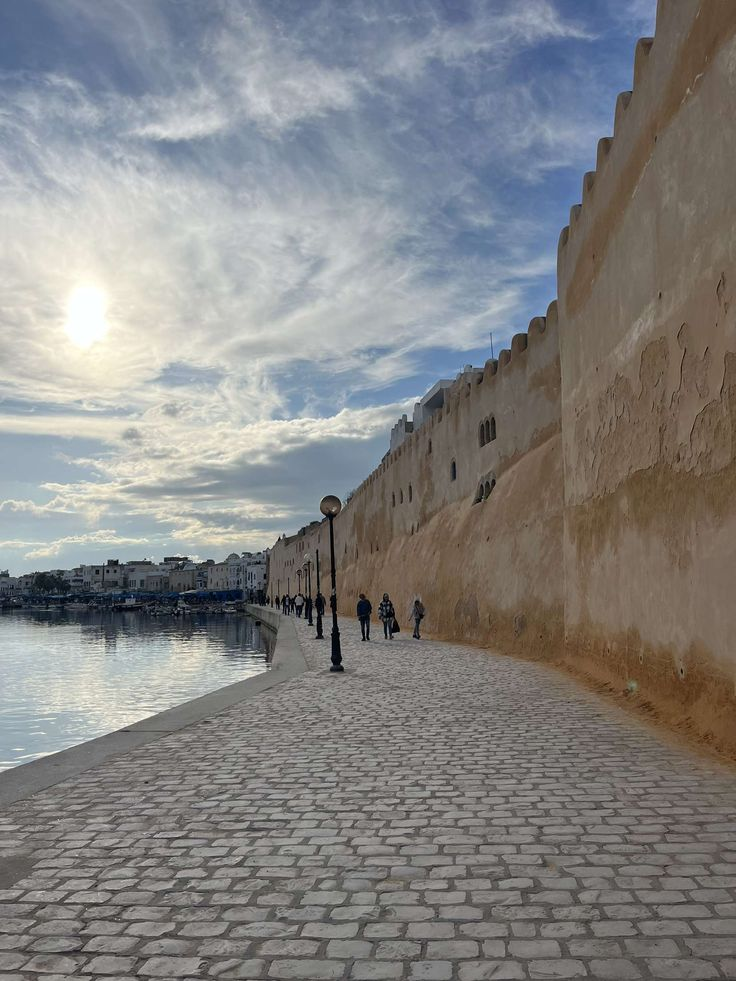
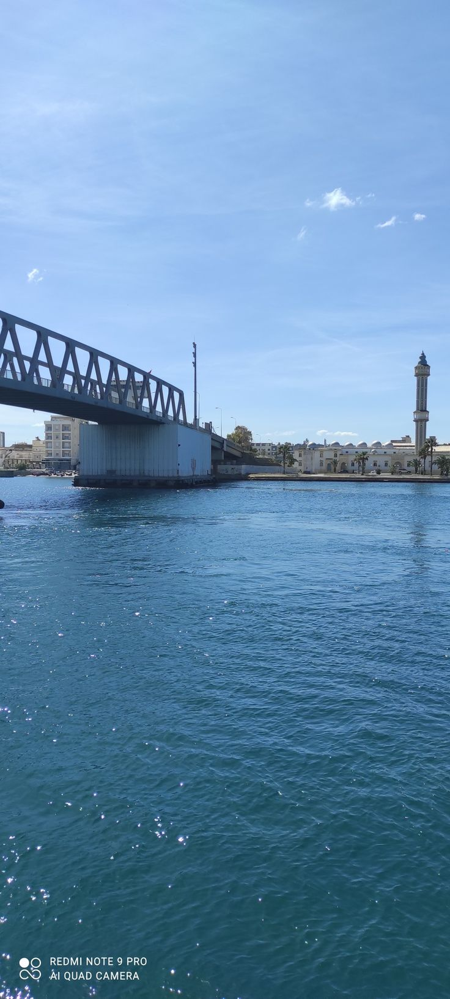
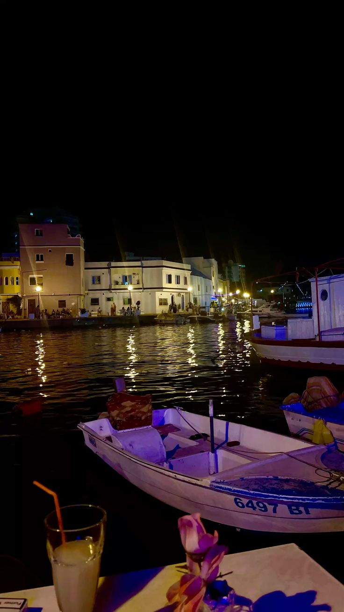
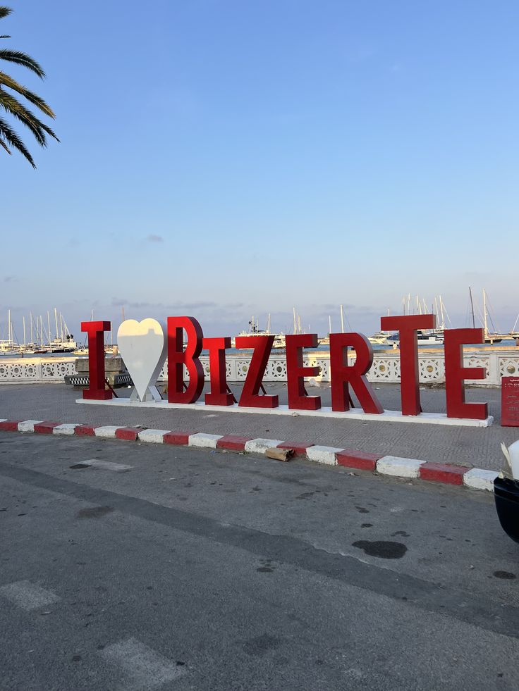
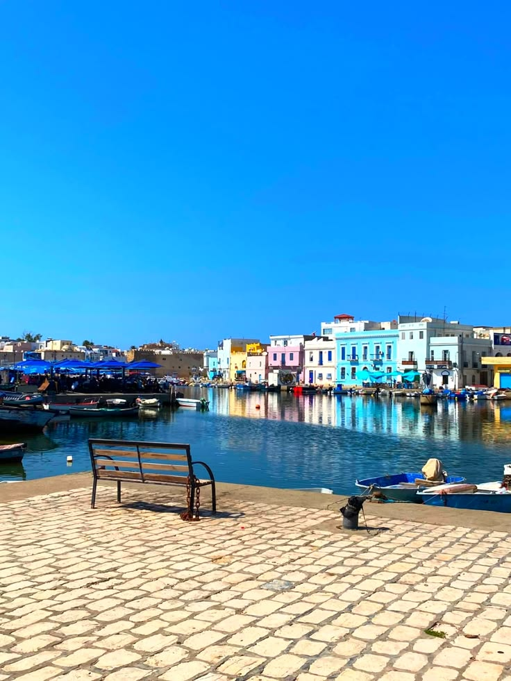
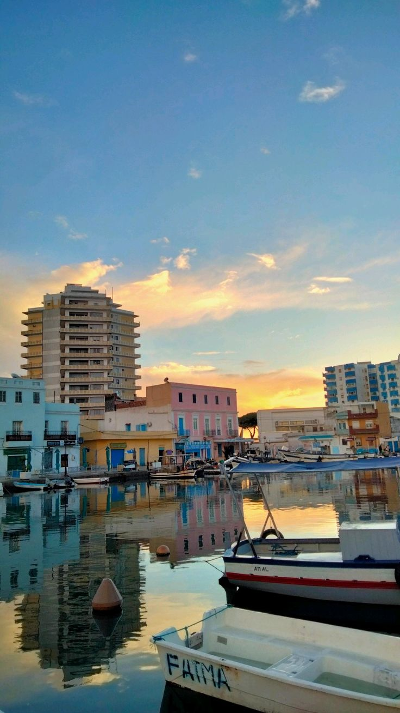

مدينة البحر، الميناء، التاريخ والحياة الهادئة حول ISET Bizerte.
بنزرت بلاد مليانة بتاريخها ومنازلها القديمة اللي سكانها مواظبين على ترميمها، أنهجها المزيانة والنظيفة، بحرها ومينائها.. مدينة تجمع بين التاريخ، الطبيعة، والهدوء، وكل زاوية فيها عندها حكاية.
صور من الملف المرفق، بدون عناوين فوق الصور.





